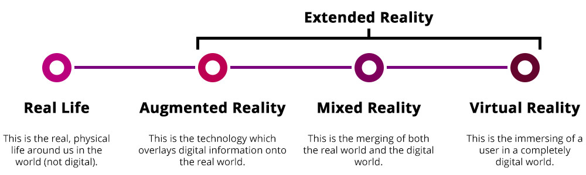

Extended Reality
Definition
XR is a superset which includes the entire spectrum from "the complete real" to "the complete virtual" in the concept of reality–virtuality continuum introduced by Paul Milgram. Still, its connotation lies in the extension of human experiences especially relating to the senses of existence (represented by VR) and the acquisition of cognition (represented by AR). With the continuous development in human–computer interactions, this connotation is still evolving.
Technology (for XR)
There are none, because it's just a term reffering to all realities
Nett2Know
Extended Reality is a new term. There is not much to say about it.